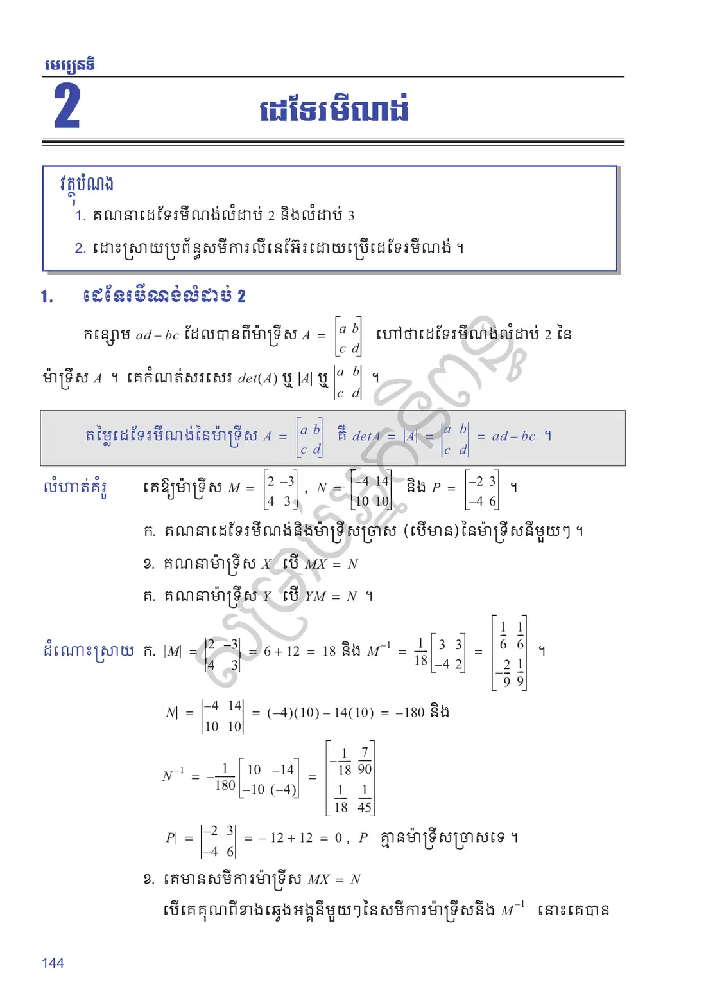
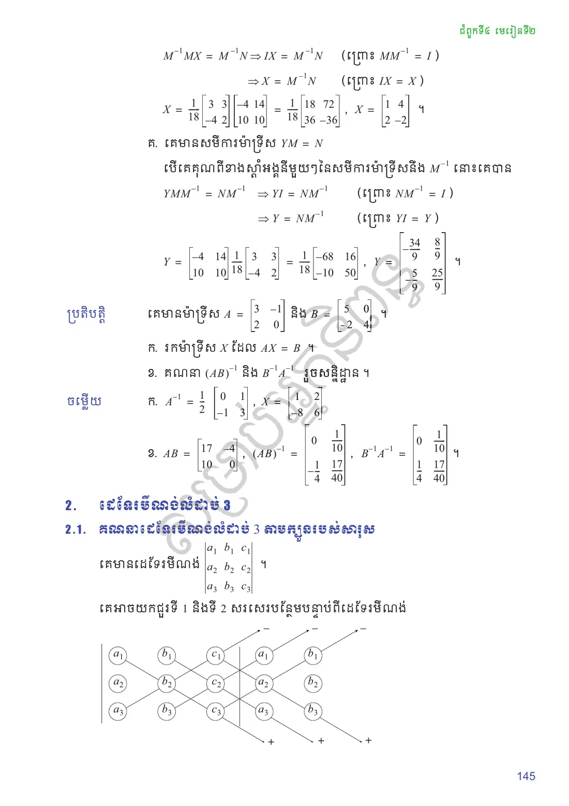
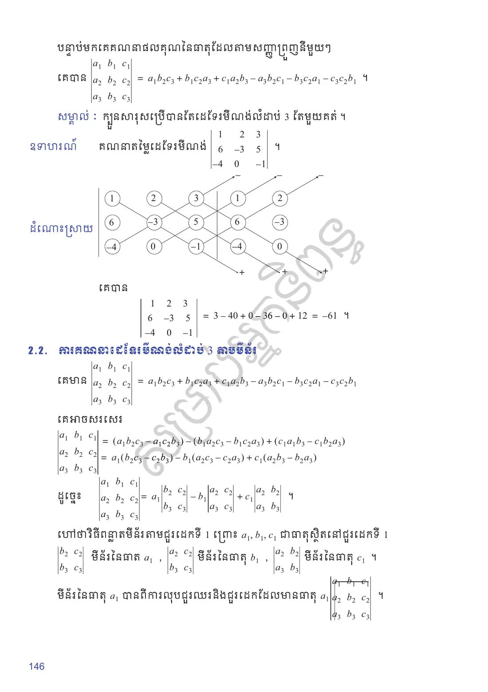
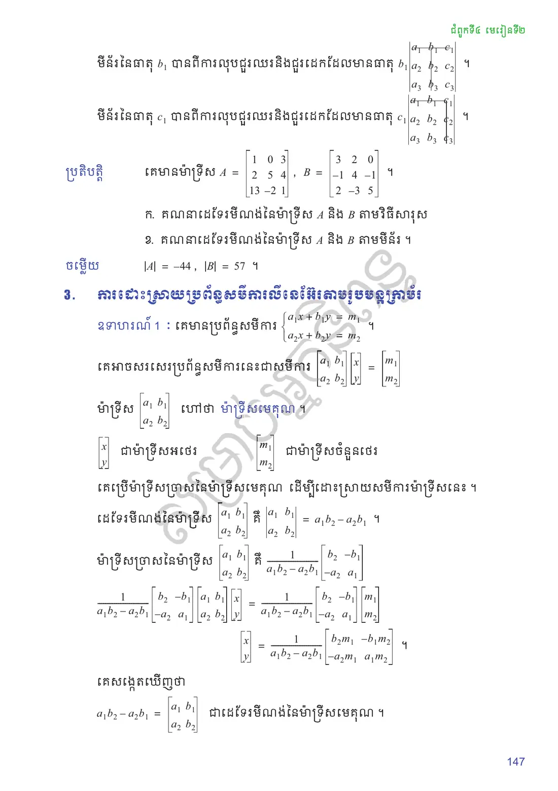
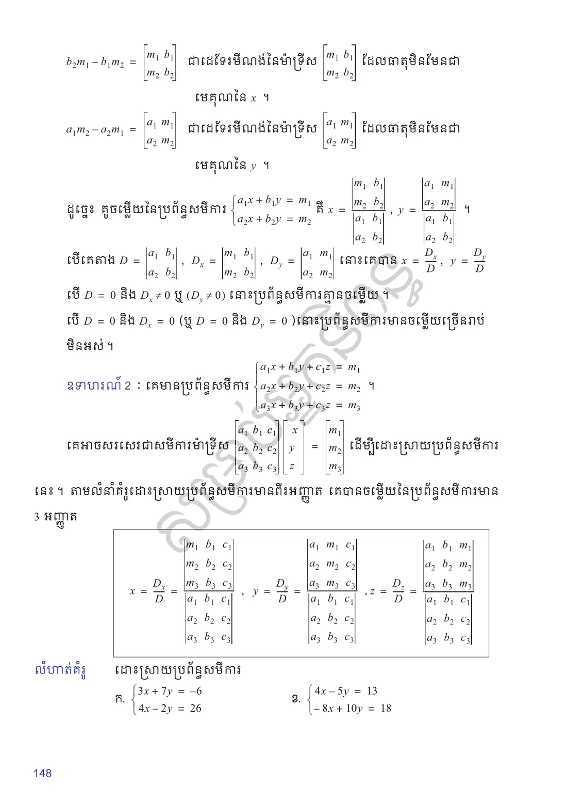
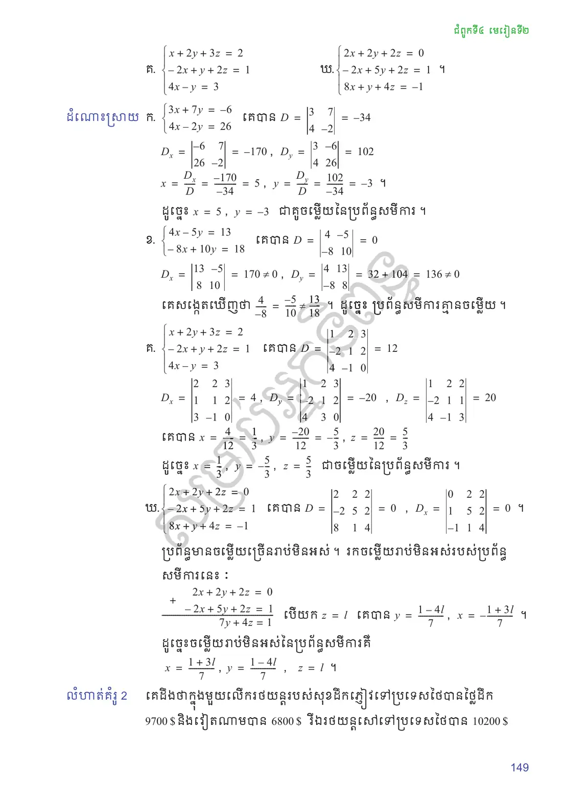
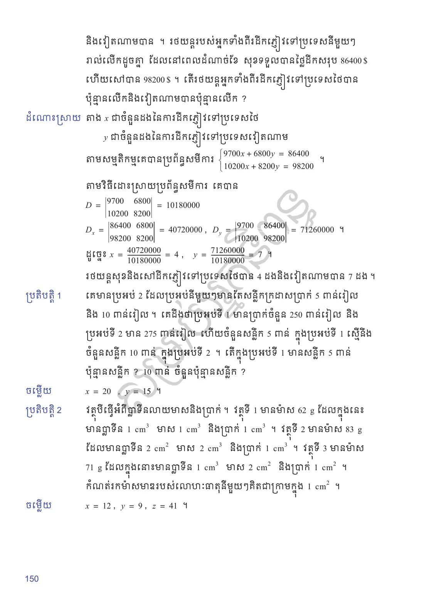
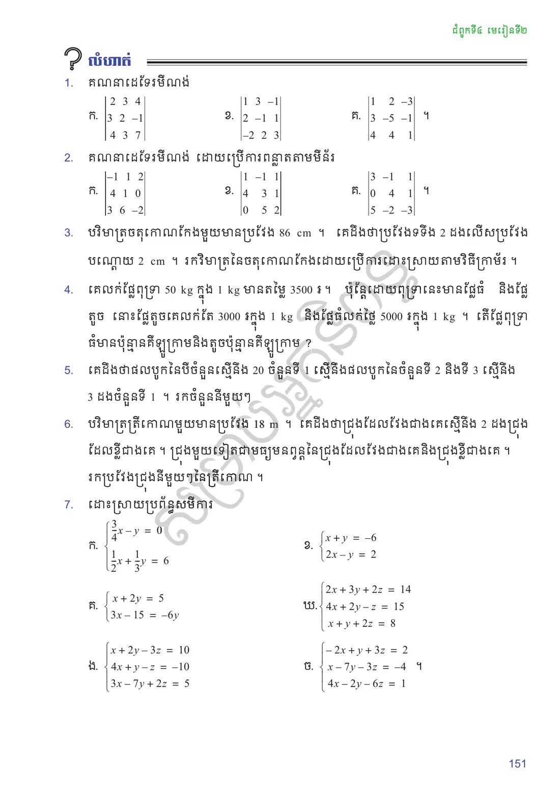
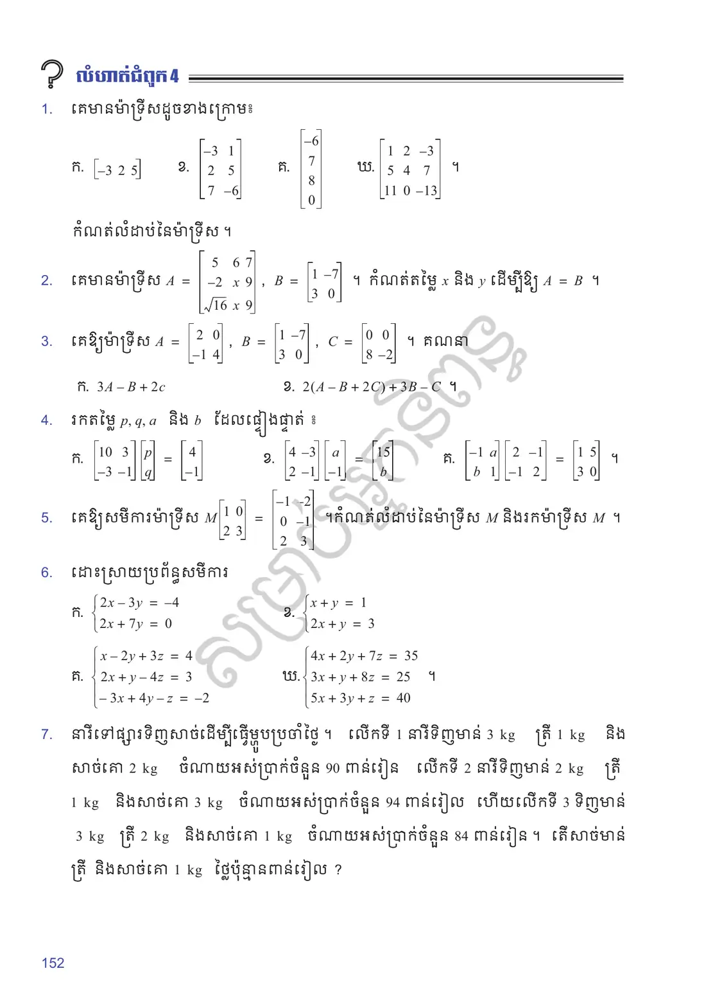

គណនាដេទែរមីណង់លំដាប់ \(2\) និងលំដាប់ \(3\)
ដោះស្រាយប្រព័ន្ធសមីការលីនេអ៊ែរដោយប្រើដេទែរមីណង់ ។
ដេទែរមីណង់លំដាប់ 2
កន្សោម \(ad - bc\) ដែលបានពីម៉ាទ្រីស \(A = \begin{bmatrix} a & b\\ c & d \end{bmatrix}\) ហៅថា ដេទែរមីណង់លំដាប់ \(2\) នៃម៉ាទ្រីស \(A\) ។ គេកំណត់សរសេរ \(\det(A)\) ឬ \(|A|\) ឬ \(\begin{vmatrix} a & b\\ c & d \end{vmatrix}\) ។
តម្លៃដេទែរមីណង់នៃម៉ាទ្រីស \(A = \begin{bmatrix} a & b\\ c & d \end{bmatrix}\) គឺ \(\det A = |A| = \begin{vmatrix} a & b\\ c & d \end{vmatrix} = ad - bc\) ។
គេឱ្យម៉ាទ្រីស \(M = \begin{bmatrix} 2 & -3\\ 4 & 3 \end{bmatrix}\), \(N = \begin{bmatrix} -4 & 14\\ 10 & 10 \end{bmatrix}\) និង \(P = \begin{bmatrix} -2 & 3\\ -4 & 6 \end{bmatrix}\) ។
គណនាដេទែរមីណង់និងម៉ាទ្រីសច្រាស (បើមាន) នៃម៉ាទ្រីសនីមួយៗ ។
គណនាម៉ាទ្រីស \(X\) បើ \(MX = N\)
គណនាម៉ាទ្រីស \(Y\) បើ \(YM = N\) ។
\(|M| = \begin{vmatrix} 2 & -3\\ 4 & 3 \end{vmatrix} = 6 + 12 = 18\) និង \(M^{-1} = \dfrac{1}{18}\begin{bmatrix} 3 & 3\\ -4 & 2 \end{bmatrix} = \begin{bmatrix} \frac{1}{6} & \frac{1}{6}\\ -\frac{2}{9} & \frac{1}{9} \end{bmatrix}\) ។
\(|N| = \begin{vmatrix} -4 & 14\\ 10 & 10 \end{vmatrix} = (-4)(10) - 14(10) = -180\) និង \(N^{-1} = -\dfrac{1}{180}\begin{bmatrix} 10 & -14\\ -10 & -4 \end{bmatrix} = \begin{bmatrix} -\frac{1}{18} & \frac{7}{90}\\ \frac{1}{18} & \frac{1}{45} \end{bmatrix}\)
\(|P| = \begin{vmatrix} -2 & 3\\ -4 & 6 \end{vmatrix} = -12 + 12 = 0\), \(P\) គ្មានម៉ាទ្រីសច្រាសទេ ។
គេមានសមីការម៉ាទ្រីស \(MX = N\) ។ បើគេគុណពីខាងឆ្វេងអង្គនីមួយៗនៃសមីការម៉ាទ្រីសនឹង \(M^{-1}\) នោះគេបាន
\[\begin{aligned} M^{-1}MX &= M^{-1}N \Rightarrow IX = M^{-1}N \ (\text{ព្រោះ } M^{-1}M = I)\\ &\Rightarrow X = M^{-1}N \ (\text{ព្រោះ } IX = X) \end{aligned}\]\[\begin{gathered} X = \frac{1}{18}\begin{bmatrix} 3 & 3\\ -4 & 2 \end{bmatrix}\begin{bmatrix} -4 & 14\\ 10 & 10 \end{bmatrix} = \frac{1}{18}\begin{bmatrix} 18 & 72\\ 36 & -36 \end{bmatrix},\\ X = \begin{bmatrix} 1 & 4\\ 2 & -2 \end{bmatrix} \text{ ។} \end{gathered}\]គេមានសមីការម៉ាទ្រីស \(YM = N\) ។ បើគេគុណពីខាងស្តាំអង្គនីមួយៗនៃសមីការម៉ាទ្រីសនឹង \(M^{-1}\) នោះគេបាន
\[YMM^{-1} = NM^{-1} \Rightarrow YI = NM^{-1} \Rightarrow Y = NM^{-1}\]\[\begin{gathered} Y = \begin{bmatrix} -4 & 14\\ 10 & 10 \end{bmatrix}\frac{1}{18}\begin{bmatrix} 3 & 3\\ -4 & 2 \end{bmatrix} = \frac{1}{18}\begin{bmatrix} -68 & 16\\ -10 & 50 \end{bmatrix},\\ Y = \begin{bmatrix} -\frac{34}{9} & \frac{8}{9}\\ -\frac{5}{9} & \frac{25}{9} \end{bmatrix} \text{ ។} \end{gathered}\]
គេមានម៉ាទ្រីស \(A = \begin{bmatrix} 3 & -1\\ 2 & 0 \end{bmatrix}\) និង \(B = \begin{bmatrix} 5 & 0\\ -2 & 4 \end{bmatrix}\) ។ ក. រកម៉ាទ្រីស \(X\) ដែល \(AX = B\) ។ ខ. គណនា \((AB)^{-1}\) និង \(B^{-1}A^{-1}\) រួចសន្និដ្ឋាន ។
មើលចម្លើយ
ក. \(A^{-1} = \dfrac{1}{2}\begin{bmatrix} 0 & 1\\ -2 & 3 \end{bmatrix}\), \(X = \begin{bmatrix} -1 & 2\\ -8 & 6 \end{bmatrix}\) ។
ខ. \(AB = \begin{bmatrix} 17 & -4\\ 10 & 0 \end{bmatrix}\), \((AB)^{-1} = \begin{bmatrix} 0 & \frac{1}{10}\\ -\frac{1}{4} & \frac{17}{40} \end{bmatrix} = B^{-1}A^{-1}\) ។
ដេទែរមីណង់លំដាប់ 3
គណនាដេទែរមីណង់លំដាប់ 3 តាមក្បួនរបស់សារុស
គេមានដេទែរមីណង់ \(\begin{vmatrix} a_1 & b_1 & c_1\\ a_2 & b_2 & c_2\\ a_3 & b_3 & c_3 \end{vmatrix}\) ។ គេអាចយកជួរទី \(1\) និងទី \(2\) សរសេរបន្ថែមបន្ទាប់ពីដេទែរមីណង់ ។
![](data:image/svg+xml;charset=utf-8,%3C%3Fxml version=%221.0%22 encoding=%22UTF-8%22%3F%3E%3Csvg xmlns=%22http://www.w3.org/2000/svg%22 xmlns:xlink=%22http://www.w3.org/1999/xlink%22 width=%22170.44%22 height=%2291.83%22 viewBox=%220 0 170.44 91.83%22%3E%3Cdefs%3E%3Cg%3E%3Cg id=%22glyph-0-0%22%3E%3Cpath d=%22M 3.70 -3.75 C 3.53 -4.12 3.23 -4.39 2.79 -4.39 C 1.62 -4.39 0.39 -2.93 0.39 -1.48 C 0.39 -0.54 0.93 0.10 1.71 0.10 C 1.92 0.10 2.42 0.06 3.01 -0.64 C 3.09 -0.21 3.43 0.10 3.92 0.10 C 4.26 0.10 4.48 -0.12 4.65 -0.43 C 4.81 -0.79 4.95 -1.40 4.95 -1.42 C 4.95 -1.51 4.85 -1.51 4.82 -1.51 C 4.73 -1.51 4.71 -1.48 4.68 -1.34 C 4.51 -0.70 4.34 -0.10 3.93 -0.10 C 3.67 -0.10 3.64 -0.37 3.64 -0.56 C 3.64 -0.78 3.65 -0.85 3.76 -1.29 C 3.87 -1.71 3.89 -1.81 3.98 -2.20 L 4.34 -3.59 C 4.40 -3.85 4.40 -3.89 4.40 -3.92 C 4.40 -4.09 4.29 -4.18 4.12 -4.18 C 3.89 -4.18 3.73 -3.96 3.70 -3.75 Z M 3.06 -1.18 C 3.01 -1 3.01 -0.98 2.85 -0.81 C 2.42 -0.26 2.01 -0.10 1.73 -0.10 C 1.25 -0.10 1.10 -0.65 1.10 -1.04 C 1.10 -1.54 1.42 -2.76 1.65 -3.21 C 1.95 -3.81 2.40 -4.17 2.79 -4.17 C 3.45 -4.17 3.59 -3.35 3.59 -3.29 C 3.59 -3.23 3.56 -3.18 3.56 -3.12 Z M 3.06 -1.18 %22/%3E%3C/g%3E%3Cg id=%22glyph-0-1%22%3E%3Cpath d=%22M 2.37 -6.78 C 2.37 -6.79 2.37 -6.89 2.25 -6.89 C 2.01 -6.89 1.29 -6.81 1.03 -6.79 C 0.95 -6.78 0.84 -6.78 0.84 -6.59 C 0.84 -6.48 0.93 -6.48 1.07 -6.48 C 1.56 -6.48 1.57 -6.40 1.57 -6.31 C 1.57 -6.23 1.48 -5.90 1.43 -5.68 L 0.62 -2.45 C 0.5 -1.95 0.46 -1.79 0.46 -1.45 C 0.46 -0.5 1 0.10 1.73 0.10 C 2.90 0.10 4.12 -1.37 4.12 -2.79 C 4.12 -3.70 3.59 -4.39 2.79 -4.39 C 2.34 -4.39 1.93 -4.10 1.64 -3.79 Z M 1.43 -3.03 C 1.5 -3.25 1.5 -3.26 1.59 -3.37 C 2.07 -4.03 2.53 -4.17 2.78 -4.17 C 3.14 -4.17 3.40 -3.87 3.40 -3.23 C 3.40 -2.65 3.07 -1.51 2.90 -1.14 C 2.57 -0.46 2.10 -0.10 1.73 -0.10 C 1.39 -0.10 1.06 -0.37 1.06 -1.10 C 1.06 -1.29 1.06 -1.48 1.21 -2.10 Z M 1.43 -3.03 %22/%3E%3C/g%3E%3Cg id=%22glyph-0-2%22%3E%3Cpath d=%22M 3.93 -3.78 C 3.78 -3.78 3.64 -3.78 3.5 -3.64 C 3.34 -3.48 3.31 -3.31 3.31 -3.25 C 3.31 -3.01 3.5 -2.90 3.68 -2.90 C 3.96 -2.90 4.25 -3.14 4.25 -3.53 C 4.25 -4.03 3.78 -4.39 3.07 -4.39 C 1.73 -4.39 0.40 -2.96 0.40 -1.56 C 0.40 -0.67 0.98 0.10 2.01 0.10 C 3.43 0.10 4.26 -0.93 4.26 -1.06 C 4.26 -1.12 4.21 -1.18 4.15 -1.18 C 4.10 -1.18 4.07 -1.17 4.03 -1.09 C 3.23 -0.10 2.15 -0.10 2.03 -0.10 C 1.40 -0.10 1.14 -0.59 1.14 -1.18 C 1.14 -1.59 1.34 -2.56 1.67 -3.18 C 1.98 -3.75 2.53 -4.17 3.07 -4.17 C 3.42 -4.17 3.79 -4.04 3.93 -3.78 Z M 3.93 -3.78 %22/%3E%3C/g%3E%3Cg id=%22glyph-1-0%22%3E%3Cpath d=%22M 2.32 -4.42 C 2.32 -4.60 2.31 -4.60 2.12 -4.60 C 1.67 -4.17 1.04 -4.17 0.76 -4.17 L 0.76 -3.92 C 0.92 -3.92 1.39 -3.92 1.76 -4.10 L 1.76 -0.56 C 1.76 -0.34 1.76 -0.25 1.07 -0.25 L 0.81 -0.25 L 0.81 0 C 0.93 0 1.78 -0.03 2.04 -0.03 C 2.26 -0.03 3.14 0 3.28 0 L 3.28 -0.25 L 3.03 -0.25 C 2.32 -0.25 2.32 -0.34 2.32 -0.56 Z M 2.32 -4.42 %22/%3E%3C/g%3E%3Cg id=%22glyph-1-1%22%3E%3Cpath d=%22M 3.51 -1.26 L 3.28 -1.26 C 3.25 -1.10 3.18 -0.70 3.09 -0.62 C 3.03 -0.59 2.5 -0.59 2.40 -0.59 L 1.12 -0.59 C 1.85 -1.23 2.09 -1.43 2.51 -1.76 C 3.03 -2.17 3.51 -2.59 3.51 -3.26 C 3.51 -4.10 2.78 -4.60 1.89 -4.60 C 1.01 -4.60 0.43 -4.01 0.43 -3.37 C 0.43 -3.01 0.73 -2.98 0.81 -2.98 C 0.96 -2.98 1.17 -3.09 1.17 -3.34 C 1.17 -3.48 1.12 -3.71 0.76 -3.71 C 0.98 -4.21 1.45 -4.35 1.78 -4.35 C 2.46 -4.35 2.84 -3.82 2.84 -3.26 C 2.84 -2.65 2.40 -2.17 2.18 -1.92 L 0.5 -0.26 C 0.43 -0.20 0.43 -0.18 0.43 0 L 3.29 0 Z M 3.51 -1.26 %22/%3E%3C/g%3E%3Cg id=%22glyph-1-2%22%3E%3Cpath d=%22M 1.89 -2.32 C 2.43 -2.32 2.82 -1.95 2.82 -1.20 C 2.82 -0.34 2.32 -0.07 1.92 -0.07 C 1.64 -0.07 1.03 -0.15 0.75 -0.56 C 1.07 -0.57 1.14 -0.81 1.14 -0.95 C 1.14 -1.18 0.98 -1.34 0.76 -1.34 C 0.56 -1.34 0.37 -1.21 0.37 -0.93 C 0.37 -0.28 1.09 0.14 1.93 0.14 C 2.90 0.14 3.57 -0.5 3.57 -1.20 C 3.57 -1.75 3.12 -2.28 2.35 -2.45 C 3.09 -2.71 3.35 -3.23 3.35 -3.65 C 3.35 -4.20 2.71 -4.60 1.95 -4.60 C 1.18 -4.60 0.59 -4.23 0.59 -3.68 C 0.59 -3.45 0.75 -3.31 0.95 -3.31 C 1.17 -3.31 1.31 -3.48 1.31 -3.67 C 1.31 -3.87 1.17 -4.01 0.95 -4.03 C 1.20 -4.34 1.67 -4.42 1.93 -4.42 C 2.25 -4.42 2.68 -4.26 2.68 -3.65 C 2.68 -3.35 2.59 -3.04 2.40 -2.82 C 2.17 -2.56 1.98 -2.54 1.64 -2.53 C 1.45 -2.51 1.45 -2.51 1.40 -2.51 C 1.39 -2.51 1.34 -2.5 1.34 -2.42 C 1.34 -2.32 1.40 -2.32 1.51 -2.32 Z M 1.89 -2.32 %22/%3E%3C/g%3E%3Cg id=%22glyph-2-0%22%3E%3Cpath d=%22M 4.06 -2.28 L 6.84 -2.28 C 6.96 -2.28 7.17 -2.28 7.17 -2.48 C 7.17 -2.68 6.96 -2.68 6.84 -2.68 L 4.06 -2.68 L 4.06 -5.46 C 4.06 -5.60 4.06 -5.79 3.85 -5.79 C 3.67 -5.79 3.67 -5.60 3.67 -5.46 L 3.67 -2.68 L 0.89 -2.68 C 0.75 -2.68 0.56 -2.68 0.56 -2.48 C 0.56 -2.28 0.75 -2.28 0.89 -2.28 L 3.67 -2.28 L 3.67 0.5 C 3.67 0.64 3.67 0.82 3.85 0.82 C 4.06 0.82 4.06 0.64 4.06 0.5 Z M 4.06 -2.28 %22/%3E%3C/g%3E%3Cg id=%22glyph-3-0%22%3E%3Cpath d=%22M 6.54 -2.28 C 6.71 -2.28 6.89 -2.28 6.89 -2.48 C 6.89 -2.68 6.71 -2.68 6.54 -2.68 L 1.17 -2.68 C 1 -2.68 0.82 -2.68 0.82 -2.48 C 0.82 -2.28 1 -2.28 1.17 -2.28 Z M 6.54 -2.28 %22/%3E%3C/g%3E%3C/g%3E%3C/defs%3E%3Cpath fill=%22none%22 stroke-width=%220.39%22 stroke-linecap=%22butt%22 stroke-linejoin=%22miter%22 stroke=%22rgb(0%25, 0%25, 0%25)%22 stroke-opacity=%221%22 stroke-miterlimit=%2210%22 d=%22M 8.46 -22.67 C 8.46 -18.00 4.67 -14.21 -0.00 -14.21 C -4.67 -14.21 -8.46 -18.00 -8.46 -22.67 C -8.46 -27.35 -4.67 -31.14 -0.00 -31.14 C 4.67 -31.14 8.46 -27.35 8.46 -22.67 Z M 8.46 -22.67 %22 transform=%22matrix(0.99, 0, 0, -0.99, 16.73, 0.62)%22/%3E%3Cg fill=%22rgb(0%25, 0%25, 0%25)%22 fill-opacity=%221%22%3E%3Cuse xlink:href=%22%23glyph-0-0%22 x=%2211.88%22 y=%2224.62%22/%3E%3C/g%3E%3Cg fill=%22rgb(0%25, 0%25, 0%25)%22 fill-opacity=%221%22%3E%3Cuse xlink:href=%22%23glyph-1-0%22 x=%2217.13%22 y=%2226.11%22/%3E%3C/g%3E%3Cpath fill=%22none%22 stroke-width=%220.39%22 stroke-linecap=%22butt%22 stroke-linejoin=%22miter%22 stroke=%22rgb(0%25, 0%25, 0%25)%22 stroke-opacity=%221%22 stroke-miterlimit=%2210%22 d=%22M 8.46 -45.35 C 8.46 -40.67 4.67 -36.88 -0.00 -36.88 C -4.67 -36.88 -8.46 -40.67 -8.46 -45.35 C -8.46 -50.03 -4.67 -53.82 -0.00 -53.82 C 4.67 -53.82 8.46 -50.03 8.46 -45.35 Z M 8.46 -45.35 %22 transform=%22matrix(0.99, 0, 0, -0.99, 16.73, 0.62)%22/%3E%3Cg fill=%22rgb(0%25, 0%25, 0%25)%22 fill-opacity=%221%22%3E%3Cuse xlink:href=%22%23glyph-0-0%22 x=%2211.88%22 y=%2247.22%22/%3E%3C/g%3E%3Cg fill=%22rgb(0%25, 0%25, 0%25)%22 fill-opacity=%221%22%3E%3Cuse xlink:href=%22%23glyph-1-1%22 x=%2217.13%22 y=%2248.71%22/%3E%3C/g%3E%3Cpath fill=%22none%22 stroke-width=%220.39%22 stroke-linecap=%22butt%22 stroke-linejoin=%22miter%22 stroke=%22rgb(0%25, 0%25, 0%25)%22 stroke-opacity=%221%22 stroke-miterlimit=%2210%22 d=%22M 8.46 -68.03 C 8.46 -63.35 4.67 -59.56 -0.00 -59.56 C -4.67 -59.56 -8.46 -63.35 -8.46 -68.03 C -8.46 -72.71 -4.67 -76.50 -0.00 -76.50 C 4.67 -76.50 8.46 -72.71 8.46 -68.03 Z M 8.46 -68.03 %22 transform=%22matrix(0.99, 0, 0, -0.99, 16.73, 0.62)%22/%3E%3Cg fill=%22rgb(0%25, 0%25, 0%25)%22 fill-opacity=%221%22%3E%3Cuse xlink:href=%22%23glyph-0-0%22 x=%2211.88%22 y=%2269.82%22/%3E%3C/g%3E%3Cg fill=%22rgb(0%25, 0%25, 0%25)%22 fill-opacity=%221%22%3E%3Cuse xlink:href=%22%23glyph-1-2%22 x=%2217.13%22 y=%2271.31%22/%3E%3C/g%3E%3Cpath fill=%22none%22 stroke-width=%220.39%22 stroke-linecap=%22butt%22 stroke-linejoin=%22miter%22 stroke=%22rgb(0%25, 0%25, 0%25)%22 stroke-opacity=%221%22 stroke-miterlimit=%2210%22 d=%22M 37.94 -22.67 C 37.94 -18.00 34.15 -14.21 29.48 -14.21 C 24.80 -14.21 21.01 -18.00 21.01 -22.67 C 21.01 -27.35 24.80 -31.14 29.48 -31.14 C 34.15 -31.14 37.94 -27.35 37.94 -22.67 Z M 37.94 -22.67 %22 transform=%22matrix(0.99, 0, 0, -0.99, 16.73, 0.62)%22/%3E%3Cg fill=%22rgb(0%25, 0%25, 0%25)%22 fill-opacity=%221%22%3E%3Cuse xlink:href=%22%23glyph-0-1%22 x=%2241.76%22 y=%2225.93%22/%3E%3C/g%3E%3Cg fill=%22rgb(0%25, 0%25, 0%25)%22 fill-opacity=%221%22%3E%3Cuse xlink:href=%22%23glyph-1-0%22 x=%2246.02%22 y=%2227.42%22/%3E%3C/g%3E%3Cpath fill=%22none%22 stroke-width=%220.39%22 stroke-linecap=%22butt%22 stroke-linejoin=%22miter%22 stroke=%22rgb(0%25, 0%25, 0%25)%22 stroke-opacity=%221%22 stroke-miterlimit=%2210%22 d=%22M 37.94 -45.35 C 37.94 -40.67 34.15 -36.88 29.48 -36.88 C 24.80 -36.88 21.01 -40.67 21.01 -45.35 C 21.01 -50.03 24.80 -53.82 29.48 -53.82 C 34.15 -53.82 37.94 -50.03 37.94 -45.35 Z M 37.94 -45.35 %22 transform=%22matrix(0.99, 0, 0, -0.99, 16.73, 0.62)%22/%3E%3Cg fill=%22rgb(0%25, 0%25, 0%25)%22 fill-opacity=%221%22%3E%3Cuse xlink:href=%22%23glyph-0-1%22 x=%2241.76%22 y=%2248.53%22/%3E%3C/g%3E%3Cg fill=%22rgb(0%25, 0%25, 0%25)%22 fill-opacity=%221%22%3E%3Cuse xlink:href=%22%23glyph-1-1%22 x=%2246.02%22 y=%2250.02%22/%3E%3C/g%3E%3Cpath fill=%22none%22 stroke-width=%220.39%22 stroke-linecap=%22butt%22 stroke-linejoin=%22miter%22 stroke=%22rgb(0%25, 0%25, 0%25)%22 stroke-opacity=%221%22 stroke-miterlimit=%2210%22 d=%22M 37.94 -68.03 C 37.94 -63.35 34.15 -59.56 29.48 -59.56 C 24.80 -59.56 21.01 -63.35 21.01 -68.03 C 21.01 -72.71 24.80 -76.50 29.48 -76.50 C 34.15 -76.50 37.94 -72.71 37.94 -68.03 Z M 37.94 -68.03 %22 transform=%22matrix(0.99, 0, 0, -0.99, 16.73, 0.62)%22/%3E%3Cg fill=%22rgb(0%25, 0%25, 0%25)%22 fill-opacity=%221%22%3E%3Cuse xlink:href=%22%23glyph-0-1%22 x=%2241.76%22 y=%2271.13%22/%3E%3C/g%3E%3Cg fill=%22rgb(0%25, 0%25, 0%25)%22 fill-opacity=%221%22%3E%3Cuse xlink:href=%22%23glyph-1-2%22 x=%2246.02%22 y=%2272.62%22/%3E%3C/g%3E%3Cpath fill=%22none%22 stroke-width=%220.39%22 stroke-linecap=%22butt%22 stroke-linejoin=%22miter%22 stroke=%22rgb(0%25, 0%25, 0%25)%22 stroke-opacity=%221%22 stroke-miterlimit=%2210%22 d=%22M 67.43 -22.67 C 67.43 -18.00 63.63 -14.21 58.96 -14.21 C 54.28 -14.21 50.49 -18.00 50.49 -22.67 C 50.49 -27.35 54.28 -31.14 58.96 -31.14 C 63.63 -31.14 67.43 -27.35 67.43 -22.67 Z M 67.43 -22.67 %22 transform=%22matrix(0.99, 0, 0, -0.99, 16.73, 0.62)%22/%3E%3Cg fill=%22rgb(0%25, 0%25, 0%25)%22 fill-opacity=%221%22%3E%3Cuse xlink:href=%22%23glyph-0-2%22 x=%2271.13%22 y=%2224.62%22/%3E%3C/g%3E%3Cg fill=%22rgb(0%25, 0%25, 0%25)%22 fill-opacity=%221%22%3E%3Cuse xlink:href=%22%23glyph-1-0%22 x=%2275.42%22 y=%2226.11%22/%3E%3C/g%3E%3Cpath fill=%22none%22 stroke-width=%220.39%22 stroke-linecap=%22butt%22 stroke-linejoin=%22miter%22 stroke=%22rgb(0%25, 0%25, 0%25)%22 stroke-opacity=%221%22 stroke-miterlimit=%2210%22 d=%22M 67.43 -45.35 C 67.43 -40.67 63.63 -36.88 58.96 -36.88 C 54.28 -36.88 50.49 -40.67 50.49 -45.35 C 50.49 -50.03 54.28 -53.82 58.96 -53.82 C 63.63 -53.82 67.43 -50.03 67.43 -45.35 Z M 67.43 -45.35 %22 transform=%22matrix(0.99, 0, 0, -0.99, 16.73, 0.62)%22/%3E%3Cg fill=%22rgb(0%25, 0%25, 0%25)%22 fill-opacity=%221%22%3E%3Cuse xlink:href=%22%23glyph-0-2%22 x=%2271.13%22 y=%2247.22%22/%3E%3C/g%3E%3Cg fill=%22rgb(0%25, 0%25, 0%25)%22 fill-opacity=%221%22%3E%3Cuse xlink:href=%22%23glyph-1-1%22 x=%2275.42%22 y=%2248.71%22/%3E%3C/g%3E%3Cpath fill=%22none%22 stroke-width=%220.39%22 stroke-linecap=%22butt%22 stroke-linejoin=%22miter%22 stroke=%22rgb(0%25, 0%25, 0%25)%22 stroke-opacity=%221%22 stroke-miterlimit=%2210%22 d=%22M 67.43 -68.03 C 67.43 -63.35 63.63 -59.56 58.96 -59.56 C 54.28 -59.56 50.49 -63.35 50.49 -68.03 C 50.49 -72.71 54.28 -76.50 58.96 -76.50 C 63.63 -76.50 67.43 -72.71 67.43 -68.03 Z M 67.43 -68.03 %22 transform=%22matrix(0.99, 0, 0, -0.99, 16.73, 0.62)%22/%3E%3Cg fill=%22rgb(0%25, 0%25, 0%25)%22 fill-opacity=%221%22%3E%3Cuse xlink:href=%22%23glyph-0-2%22 x=%2271.13%22 y=%2269.82%22/%3E%3C/g%3E%3Cg fill=%22rgb(0%25, 0%25, 0%25)%22 fill-opacity=%221%22%3E%3Cuse xlink:href=%22%23glyph-1-2%22 x=%2275.42%22 y=%2271.31%22/%3E%3C/g%3E%3Cpath fill=%22none%22 stroke-width=%220.39%22 stroke-linecap=%22butt%22 stroke-linejoin=%22miter%22 stroke=%22rgb(0%25, 0%25, 0%25)%22 stroke-opacity=%221%22 stroke-miterlimit=%2210%22 d=%22M 96.91 -22.67 C 96.91 -18.00 93.12 -14.21 88.44 -14.21 C 83.76 -14.21 79.97 -18.00 79.97 -22.67 C 79.97 -27.35 83.76 -31.14 88.44 -31.14 C 93.12 -31.14 96.91 -27.35 96.91 -22.67 Z M 96.91 -22.67 %22 transform=%22matrix(0.99, 0, 0, -0.99, 16.73, 0.62)%22/%3E%3Cg fill=%22rgb(0%25, 0%25, 0%25)%22 fill-opacity=%221%22%3E%3Cuse xlink:href=%22%23glyph-0-0%22 x=%22100.04%22 y=%2224.62%22/%3E%3C/g%3E%3Cg fill=%22rgb(0%25, 0%25, 0%25)%22 fill-opacity=%221%22%3E%3Cuse xlink:href=%22%23glyph-1-0%22 x=%22105.29%22 y=%2226.11%22/%3E%3C/g%3E%3Cpath fill=%22none%22 stroke-width=%220.39%22 stroke-linecap=%22butt%22 stroke-linejoin=%22miter%22 stroke=%22rgb(0%25, 0%25, 0%25)%22 stroke-opacity=%221%22 stroke-miterlimit=%2210%22 d=%22M 96.91 -45.35 C 96.91 -40.67 93.12 -36.88 88.44 -36.88 C 83.76 -36.88 79.97 -40.67 79.97 -45.35 C 79.97 -50.03 83.76 -53.82 88.44 -53.82 C 93.12 -53.82 96.91 -50.03 96.91 -45.35 Z M 96.91 -45.35 %22 transform=%22matrix(0.99, 0, 0, -0.99, 16.73, 0.62)%22/%3E%3Cg fill=%22rgb(0%25, 0%25, 0%25)%22 fill-opacity=%221%22%3E%3Cuse xlink:href=%22%23glyph-0-0%22 x=%22100.04%22 y=%2247.22%22/%3E%3C/g%3E%3Cg fill=%22rgb(0%25, 0%25, 0%25)%22 fill-opacity=%221%22%3E%3Cuse xlink:href=%22%23glyph-1-1%22 x=%22105.29%22 y=%2248.71%22/%3E%3C/g%3E%3Cpath fill=%22none%22 stroke-width=%220.39%22 stroke-linecap=%22butt%22 stroke-linejoin=%22miter%22 stroke=%22rgb(0%25, 0%25, 0%25)%22 stroke-opacity=%221%22 stroke-miterlimit=%2210%22 d=%22M 96.91 -68.03 C 96.91 -63.35 93.12 -59.56 88.44 -59.56 C 83.76 -59.56 79.97 -63.35 79.97 -68.03 C 79.97 -72.71 83.76 -76.50 88.44 -76.50 C 93.12 -76.50 96.91 -72.71 96.91 -68.03 Z M 96.91 -68.03 %22 transform=%22matrix(0.99, 0, 0, -0.99, 16.73, 0.62)%22/%3E%3Cg fill=%22rgb(0%25, 0%25, 0%25)%22 fill-opacity=%221%22%3E%3Cuse xlink:href=%22%23glyph-0-0%22 x=%22100.04%22 y=%2269.82%22/%3E%3C/g%3E%3Cg fill=%22rgb(0%25, 0%25, 0%25)%22 fill-opacity=%221%22%3E%3Cuse xlink:href=%22%23glyph-1-2%22 x=%22105.29%22 y=%2271.31%22/%3E%3C/g%3E%3Cpath fill=%22none%22 stroke-width=%220.39%22 stroke-linecap=%22butt%22 stroke-linejoin=%22miter%22 stroke=%22rgb(0%25, 0%25, 0%25)%22 stroke-opacity=%221%22 stroke-miterlimit=%2210%22 d=%22M 126.39 -22.67 C 126.39 -18.00 122.59 -14.21 117.92 -14.21 C 113.24 -14.21 109.45 -18.00 109.45 -22.67 C 109.45 -27.35 113.24 -31.14 117.92 -31.14 C 122.59 -31.14 126.39 -27.35 126.39 -22.67 Z M 126.39 -22.67 %22 transform=%22matrix(0.99, 0, 0, -0.99, 16.73, 0.62)%22/%3E%3Cg fill=%22rgb(0%25, 0%25, 0%25)%22 fill-opacity=%221%22%3E%3Cuse xlink:href=%22%23glyph-0-1%22 x=%22129.91%22 y=%2225.93%22/%3E%3C/g%3E%3Cg fill=%22rgb(0%25, 0%25, 0%25)%22 fill-opacity=%221%22%3E%3Cuse xlink:href=%22%23glyph-1-0%22 x=%22134.18%22 y=%2227.42%22/%3E%3C/g%3E%3Cpath fill=%22none%22 stroke-width=%220.39%22 stroke-linecap=%22butt%22 stroke-linejoin=%22miter%22 stroke=%22rgb(0%25, 0%25, 0%25)%22 stroke-opacity=%221%22 stroke-miterlimit=%2210%22 d=%22M 126.39 -45.35 C 126.39 -40.67 122.59 -36.88 117.92 -36.88 C 113.24 -36.88 109.45 -40.67 109.45 -45.35 C 109.45 -50.03 113.24 -53.82 117.92 -53.82 C 122.59 -53.82 126.39 -50.03 126.39 -45.35 Z M 126.39 -45.35 %22 transform=%22matrix(0.99, 0, 0, -0.99, 16.73, 0.62)%22/%3E%3Cg fill=%22rgb(0%25, 0%25, 0%25)%22 fill-opacity=%221%22%3E%3Cuse xlink:href=%22%23glyph-0-1%22 x=%22129.91%22 y=%2248.53%22/%3E%3C/g%3E%3Cg fill=%22rgb(0%25, 0%25, 0%25)%22 fill-opacity=%221%22%3E%3Cuse xlink:href=%22%23glyph-1-1%22 x=%22134.18%22 y=%2250.02%22/%3E%3C/g%3E%3Cpath fill=%22none%22 stroke-width=%220.39%22 stroke-linecap=%22butt%22 stroke-linejoin=%22miter%22 stroke=%22rgb(0%25, 0%25, 0%25)%22 stroke-opacity=%221%22 stroke-miterlimit=%2210%22 d=%22M 126.39 -68.03 C 126.39 -63.35 122.59 -59.56 117.92 -59.56 C 113.24 -59.56 109.45 -63.35 109.45 -68.03 C 109.45 -72.71 113.24 -76.50 117.92 -76.50 C 122.59 -76.50 126.39 -72.71 126.39 -68.03 Z M 126.39 -68.03 %22 transform=%22matrix(0.99, 0, 0, -0.99, 16.73, 0.62)%22/%3E%3Cg fill=%22rgb(0%25, 0%25, 0%25)%22 fill-opacity=%221%22%3E%3Cuse xlink:href=%22%23glyph-0-1%22 x=%22129.91%22 y=%2271.13%22/%3E%3C/g%3E%3Cg fill=%22rgb(0%25, 0%25, 0%25)%22 fill-opacity=%221%22%3E%3Cuse xlink:href=%22%23glyph-1-2%22 x=%22134.18%22 y=%2272.62%22/%3E%3C/g%3E%3Cpath fill=%22none%22 stroke-width=%220.39%22 stroke-linecap=%22butt%22 stroke-linejoin=%22miter%22 stroke=%22rgb(0%25, 0%25, 0%25)%22 stroke-opacity=%221%22 stroke-miterlimit=%2210%22 d=%22M -13.60 -11.33 L -13.60 -79.36 %22 transform=%22matrix(0.99, 0, 0, -0.99, 16.73, 0.62)%22/%3E%3Cpath fill=%22none%22 stroke-width=%220.39%22 stroke-linecap=%22butt%22 stroke-linejoin=%22miter%22 stroke=%22rgb(0%25, 0%25, 0%25)%22 stroke-opacity=%221%22 stroke-miterlimit=%2210%22 d=%22M 73.70 -11.33 L 73.70 -79.36 %22 transform=%22matrix(0.99, 0, 0, -0.99, 16.73, 0.62)%22/%3E%3Cpath fill=%22none%22 stroke-width=%220.39%22 stroke-linecap=%22butt%22 stroke-linejoin=%22miter%22 stroke=%22rgb(0%25, 0%25, 100%25)%22 stroke-opacity=%221%22 stroke-miterlimit=%2210%22 d=%22M 6.86 -27.96 L 22.61 -40.06 M 36.35 -50.63 L 52.09 -62.74 M 65.89 -73.23 L 76.78 -81.39 %22 transform=%22matrix(0.99, 0, 0, -0.99, 16.73, 0.62)%22/%3E%3Cpath fill=%22none%22 stroke-width=%220.39%22 stroke-linecap=%22round%22 stroke-linejoin=%22round%22 stroke=%22rgb(0%25, 0%25, 100%25)%22 stroke-opacity=%221%22 stroke-miterlimit=%2210%22 d=%22M -2.07 2.39 C -1.69 0.95 -0.84 0.27 -0.00 -0.00 C -0.84 -0.28 -1.69 -0.95 -2.07 -2.39 %22 transform=%22matrix(0.79, 0.59, 0.59, -0.79, 93.43, 81.87)%22/%3E%3Cg fill=%22rgb(0%25, 0%25, 100%25)%22 fill-opacity=%221%22%3E%3Cuse xlink:href=%22%23glyph-2-0%22 x=%2297.09%22 y=%2284.47%22/%3E%3C/g%3E%3Cpath fill=%22none%22 stroke-width=%220.39%22 stroke-linecap=%22butt%22 stroke-linejoin=%22miter%22 stroke=%22rgb(100%25, 0%25, 0%25)%22 stroke-opacity=%221%22 stroke-miterlimit=%2210%22 d=%22M 6.86 -62.74 L 22.61 -50.63 M 36.35 -40.06 L 52.09 -27.96 M 65.89 -17.47 L 76.78 -9.31 %22 transform=%22matrix(0.99, 0, 0, -0.99, 16.73, 0.62)%22/%3E%3Cpath fill=%22none%22 stroke-width=%220.39%22 stroke-linecap=%22round%22 stroke-linejoin=%22round%22 stroke=%22rgb(100%25, 0%25, 0%25)%22 stroke-opacity=%221%22 stroke-miterlimit=%2210%22 d=%22M -2.07 2.39 C -1.69 0.95 -0.85 0.28 -0.00 0.00 C -0.84 -0.27 -1.69 -0.95 -2.07 -2.39 %22 transform=%22matrix(0.79, -0.59, -0.59, -0.79, 93.43, 9.78)%22/%3E%3Cg fill=%22rgb(100%25, 0%25, 0%25)%22 fill-opacity=%221%22%3E%3Cuse xlink:href=%22%23glyph-3-0%22 x=%2297.09%22 y=%2212.14%22/%3E%3C/g%3E%3Cpath fill=%22none%22 stroke-width=%220.39%22 stroke-linecap=%22butt%22 stroke-linejoin=%22miter%22 stroke=%22rgb(0%25, 0%25, 100%25)%22 stroke-opacity=%221%22 stroke-miterlimit=%2210%22 d=%22M 36.35 -27.96 L 52.09 -40.06 M 65.83 -50.63 L 81.57 -62.74 M 95.37 -73.23 L 106.26 -81.39 %22 transform=%22matrix(0.99, 0, 0, -0.99, 16.73, 0.62)%22/%3E%3Cpath fill=%22none%22 stroke-width=%220.39%22 stroke-linecap=%22round%22 stroke-linejoin=%22round%22 stroke=%22rgb(0%25, 0%25, 100%25)%22 stroke-opacity=%221%22 stroke-miterlimit=%2210%22 d=%22M -2.07 2.39 C -1.69 0.95 -0.84 0.27 0.00 -0.00 C -0.84 -0.27 -1.69 -0.95 -2.07 -2.39 %22 transform=%22matrix(0.79, 0.59, 0.59, -0.79, 122.81, 81.87)%22/%3E%3Cg fill=%22rgb(0%25, 0%25, 100%25)%22 fill-opacity=%221%22%3E%3Cuse xlink:href=%22%23glyph-2-0%22 x=%22126.48%22 y=%2284.47%22/%3E%3C/g%3E%3Cpath fill=%22none%22 stroke-width=%220.39%22 stroke-linecap=%22butt%22 stroke-linejoin=%22miter%22 stroke=%22rgb(100%25, 0%25, 0%25)%22 stroke-opacity=%221%22 stroke-miterlimit=%2210%22 d=%22M 36.35 -62.74 L 52.09 -50.63 M 65.83 -40.06 L 81.57 -27.96 M 95.37 -17.47 L 106.26 -9.31 %22 transform=%22matrix(0.99, 0, 0, -0.99, 16.73, 0.62)%22/%3E%3Cpath fill=%22none%22 stroke-width=%220.39%22 stroke-linecap=%22round%22 stroke-linejoin=%22round%22 stroke=%22rgb(100%25, 0%25, 0%25)%22 stroke-opacity=%221%22 stroke-miterlimit=%2210%22 d=%22M -2.07 2.39 C -1.69 0.95 -0.84 0.27 0.00 -0.00 C -0.85 -0.27 -1.69 -0.95 -2.07 -2.39 %22 transform=%22matrix(0.79, -0.59, -0.59, -0.79, 122.81, 9.78)%22/%3E%3Cg fill=%22rgb(100%25, 0%25, 0%25)%22 fill-opacity=%221%22%3E%3Cuse xlink:href=%22%23glyph-3-0%22 x=%22126.48%22 y=%2212.14%22/%3E%3C/g%3E%3Cpath fill=%22none%22 stroke-width=%220.39%22 stroke-linecap=%22butt%22 stroke-linejoin=%22miter%22 stroke=%22rgb(0%25, 0%25, 100%25)%22 stroke-opacity=%221%22 stroke-miterlimit=%2210%22 d=%22M 65.83 -27.96 L 81.57 -40.06 M 95.31 -50.63 L 111.05 -62.74 M 124.85 -73.23 L 135.74 -81.39 %22 transform=%22matrix(0.99, 0, 0, -0.99, 16.73, 0.62)%22/%3E%3Cpath fill=%22none%22 stroke-width=%220.39%22 stroke-linecap=%22round%22 stroke-linejoin=%22round%22 stroke=%22rgb(0%25, 0%25, 100%25)%22 stroke-opacity=%221%22 stroke-miterlimit=%2210%22 d=%22M -2.07 2.39 C -1.69 0.95 -0.84 0.27 -0.00 -0.00 C -0.84 -0.28 -1.69 -0.95 -2.07 -2.39 %22 transform=%22matrix(0.79, 0.59, 0.59, -0.79, 152.20, 81.87)%22/%3E%3Cg fill=%22rgb(0%25, 0%25, 100%25)%22 fill-opacity=%221%22%3E%3Cuse xlink:href=%22%23glyph-2-0%22 x=%22155.86%22 y=%2284.47%22/%3E%3C/g%3E%3Cpath fill=%22none%22 stroke-width=%220.39%22 stroke-linecap=%22butt%22 stroke-linejoin=%22miter%22 stroke=%22rgb(100%25, 0%25, 0%25)%22 stroke-opacity=%221%22 stroke-miterlimit=%2210%22 d=%22M 65.83 -62.74 L 81.57 -50.63 M 95.31 -40.06 L 111.05 -27.96 M 124.85 -17.47 L 135.74 -9.31 %22 transform=%22matrix(0.99, 0, 0, -0.99, 16.73, 0.62)%22/%3E%3Cpath fill=%22none%22 stroke-width=%220.39%22 stroke-linecap=%22round%22 stroke-linejoin=%22round%22 stroke=%22rgb(100%25, 0%25, 0%25)%22 stroke-opacity=%221%22 stroke-miterlimit=%2210%22 d=%22M -2.07 2.39 C -1.69 0.95 -0.84 0.27 -0.00 0.00 C -0.84 -0.27 -1.69 -0.95 -2.07 -2.38 %22 transform=%22matrix(0.79, -0.59, -0.59, -0.79, 152.20, 9.78)%22/%3E%3Cg fill=%22rgb(100%25, 0%25, 0%25)%22 fill-opacity=%221%22%3E%3Cuse xlink:href=%22%23glyph-3-0%22 x=%22155.86%22 y=%2212.14%22/%3E%3C/g%3E%3C/svg%3E%0A)
បន្ទាប់មកគេគណនាផលគុណនៃធាតុដែលតាមសញ្ញាព្រួញនីមួយៗ គេបាន
ក្បួនសារុសប្រើបានតែដេទែរមីណង់លំដាប់ \(3\) តែមួយគត់ ។
គណនាតម្លៃដេទែរមីណង់ \(\begin{vmatrix} 1 & 2 & 3\\ 6 & -3 & 5\\ -4 & 0 & -1 \end{vmatrix}\) ។ តាមក្បួនសារុស គេបាន
ការគណនាដេទែរមីណង់លំដាប់ 3 តាមមីន័រ
គេមាន \(\begin{vmatrix} a_1 & b_1 & c_1\\ a_2 & b_2 & c_2\\ a_3 & b_3 & c_3 \end{vmatrix} = a_1b_2c_3 + b_1c_2a_3 + c_1a_2b_3 - a_3b_2c_1 - b_3c_2a_1 - c_3a_2b_1\) ។ គេអាចសរសេរ
ហៅថាវិធីពន្លាតមីន័រតាមជួរដេកទី \(1\) ព្រោះ \(a_1, b_1, c_1\) ជាធាតុស្ថិតនៅជួរដេកទី \(1\) ។ \(\begin{vmatrix} b_2 & c_2\\ b_3 & c_3 \end{vmatrix}\) មីន័រនៃធាតុ \(a_1\), \(\begin{vmatrix} a_2 & c_2\\ a_3 & c_3 \end{vmatrix}\) មីន័រនៃធាតុ \(b_1\), \(\begin{vmatrix} a_2 & b_2\\ a_3 & b_3 \end{vmatrix}\) មីន័រនៃធាតុ \(c_1\) ។
មីន័រនៃធាតុ \(a_1\) បានពីការលុបជួរឈរនិងជួរដេកដែលមានធាតុ \(a_1\) ។
មីន័រនៃធាតុ \(b_1\) បានពីការលុបជួរឈរនិងជួរដេកដែលមានធាតុ \(b_1\) ។
មីន័រនៃធាតុ \(c_1\) បានពីការលុបជួរឈរនិងជួរដេកដែលមានធាតុ \(c_1\) ។
គេមានម៉ាទ្រីស \(A = \begin{bmatrix} 1 & 0 & 3\\ 2 & 5 & 4\\ 13 & -2 & 1 \end{bmatrix}\), \(B = \begin{bmatrix} 3 & 2 & 0\\ -1 & 4 & -1\\ 2 & -3 & 5 \end{bmatrix}\) ។ ក. គណនាដេទែរមីណង់នៃម៉ាទ្រីស \(A\) និង \(B\) តាមវិធីសារុស ខ. គណនាដេទែរមីណង់នៃម៉ាទ្រីស \(A\) និង \(B\) តាមមីន័រ ។
មើលចម្លើយ
\(|A| = -194\), \(|B| = 57\) ។
ការដោះស្រាយប្រព័ន្ធសមីការលីនេអ៊ែរតាមរូបមន្តក្រាម័រ
គេមានប្រព័ន្ធសមីការ \(\begin{cases} a_1x + b_1y = m_1\\ a_2x + b_2y = m_2 \end{cases}\) ។ គេអាចសរសេរប្រព័ន្ធសមីការនេះជាសមីការ \(\begin{bmatrix} a_1 & b_1\\ a_2 & b_2 \end{bmatrix}\begin{bmatrix} x\\ y \end{bmatrix} = \begin{bmatrix} m_1\\ m_2 \end{bmatrix}\) ។
ម៉ាទ្រីស \(\begin{bmatrix} a_1 & b_1\\ a_2 & b_2 \end{bmatrix}\) ហៅថា ម៉ាទ្រីសមេគុណ, \(\begin{bmatrix} x\\ y \end{bmatrix}\) ជាម៉ាទ្រីសអថេរ, \(\begin{bmatrix} m_1\\ m_2 \end{bmatrix}\) ជាម៉ាទ្រីសចំនួនថេរ ។ គេប្រើម៉ាទ្រីសច្រាសនៃម៉ាទ្រីសមេគុណ ដើម្បីដោះស្រាយសមីការម៉ាទ្រីសនេះ ។
ដេទែរមីណង់នៃម៉ាទ្រីស \(\begin{bmatrix} a_1 & b_1\\ a_2 & b_2 \end{bmatrix}\) គឺ \(a_1b_2 - a_2b_1\) ។ ម៉ាទ្រីសច្រាសគឺ \(\dfrac{1}{a_1b_2 - a_2b_1}\begin{bmatrix} b_2 & -b_1\\ -a_2 & a_1 \end{bmatrix}\) ។
បើគេតាង \(D = \begin{vmatrix} a_1 & b_1\\ a_2 & b_2 \end{vmatrix}\), \(D_x = \begin{vmatrix} m_1 & b_1\\ m_2 & b_2 \end{vmatrix}\), \(D_y = \begin{vmatrix} a_1 & m_1\\ a_2 & m_2 \end{vmatrix}\) នោះគេបាន \(x = \dfrac{D_x}{D}\), \(y = \dfrac{D_y}{D}\) (\(D \ne 0\)) ។
បើ \(D = 0\) និង \(D_x \ne 0\) ឬ \((D_y \ne 0)\) នោះប្រព័ន្ធសមីការគ្មានចម្លើយ ។
បើ \(D = 0\) និង \(D_x = 0\) (និង \(D_y = 0\)) នោះប្រព័ន្ធសមីការមានចម្លើយច្រើនរាប់មិនអស់ ។
គេមានប្រព័ន្ធសមីការ \(\begin{cases} a_1x + b_1y + c_1z = m_1\\ a_2x + b_2y + c_2z = m_2\\ a_3x + b_3y + c_3z = m_3 \end{cases}\) ។ គេអាចសរសេរជាសមីការម៉ាទ្រីស \(\begin{bmatrix} a_1 & b_1 & c_1\\ a_2 & b_2 & c_2\\ a_3 & b_3 & c_3 \end{bmatrix}\begin{bmatrix} x\\ y\\ z \end{bmatrix} = \begin{bmatrix} m_1\\ m_2\\ m_3 \end{bmatrix}\) ដើម្បីដោះស្រាយប្រព័ន្ធសមីការនេះ ។ តាមលំនាំគំរូដោះស្រាយប្រព័ន្ធសមីការមានពីរអញ្ញាត គេបានចម្លើយនៃប្រព័ន្ធសមីការមាន \(3\) អញ្ញាត
ដោះស្រាយប្រព័ន្ធសមីការ
\(\begin{cases} 3x + 7y = -6\\ 4x - 2y = 26 \end{cases}\)
\(\begin{cases} 4x - 5y = 13\\ -8x + 10y = 18 \end{cases}\)
\(\begin{cases} x + 2y + 3z = 2\\ -2x + y + 2z = 1\\ 4x - y = 3 \end{cases}\)
\(\begin{cases} 2x + 2y + 2z = 0\\ -2x + 5y + 2z = 1\\ 8x + y + 4z = -1 \end{cases}\) ។
គេបាន \(D = \begin{vmatrix} 3 & 7\\ 4 & -2 \end{vmatrix} = -34\), \(D_x = \begin{vmatrix} -6 & 7\\ 26 & -2 \end{vmatrix} = -170\), \(D_y = \begin{vmatrix} 3 & -6\\ 4 & 26 \end{vmatrix} = 102\) ។
\(x = \dfrac{D_x}{D} = \dfrac{-170}{-34} = 5\), \(y = \dfrac{D_y}{D} = \dfrac{102}{-34} = -3\) ។ ដូច្នេះ \(x = 5\), \(y = -3\) ជាគូចម្លើយនៃប្រព័ន្ធសមីការ ។
គេបាន \(D = \begin{vmatrix} 4 & -5\\ -8 & 10 \end{vmatrix} = 0\), \(D_x = \begin{vmatrix} 13 & -5\\ 18 & 10 \end{vmatrix} = 220 \ne 0\) ។ គេសង្កេតឃើញថា \(\dfrac{4}{-8} = \dfrac{-5}{10} \ne \dfrac{13}{18}\) ។ ដូច្នេះ ប្រព័ន្ធសមីការគ្មានចម្លើយ ។
គេបាន \(D = \begin{vmatrix} 1 & 2 & 3\\ -2 & 1 & 2\\ 4 & -1 & 0 \end{vmatrix} = 12\), \(D_x = \begin{vmatrix} 2 & 2 & 3\\ 1 & 1 & 2\\ 3 & -1 & 0 \end{vmatrix} = 4\), \(D_y = \begin{vmatrix} 1 & 2 & 3\\ -2 & 1 & 2\\ 4 & 3 & 0 \end{vmatrix} = -20\), \(D_z = \begin{vmatrix} 1 & 2 & 2\\ -2 & 1 & 1\\ 4 & -1 & 3 \end{vmatrix} = 20\) ។
គេបាន \(x = \dfrac{4}{12} = \dfrac{1}{3}\), \(y = \dfrac{-20}{12} = -\dfrac{5}{3}\), \(z = \dfrac{20}{12} = \dfrac{5}{3}\) ជាចម្លើយនៃប្រព័ន្ធសមីការ ។
គេបាន \(D = \begin{vmatrix} 2 & 2 & 2\\ -2 & 5 & 2\\ 8 & 1 & 4 \end{vmatrix} = 0\), \(D_x = \begin{vmatrix} 0 & 2 & 2\\ 1 & 5 & 2\\ -1 & 1 & 4 \end{vmatrix} = 0\) ។ ប្រព័ន្ធមានចម្លើយច្រើនរាប់មិនអស់ ។ រកចម្លើយរាប់មិនអស់របស់ប្រព័ន្ធសមីការនេះ ៖ បូកសមីការទី \(1\) និងទី \(2\) គេបាន \(7y + 4z = 1\) ។ បើយក \(z = l\) គេបាន \(y = \dfrac{1 - 4l}{7}\), \(x = -y - z = -\dfrac{1 + 3l}{7}\) ។
ដូច្នេះចម្លើយរាប់មិនអស់នៃប្រព័ន្ធសមីការគឺ \(x = -\dfrac{1 + 3l}{7}\), \(y = \dfrac{1 - 4l}{7}\), \(z = l\) ។
គេដឹងថាក្នុងមួយលើករថយន្តរបស់សុខដឹកភ្ញៀវទៅប្រទេសថៃបានថ្លៃដឹក \(9700\$\) និងវៀតណាមបាន \(6800\$\) រីឯរថយន្តសៅទៅប្រទេសថៃបាន \(10200\$\) និងវៀតណាមបាន \(8200\$\) ។ រថយន្តរបស់អ្នកទាំងពីរដឹកភ្ញៀវទៅប្រទេសនីមួយៗរាល់លើកដូចគ្នា ដែលនៅពេលដំណាច់ខែ សុខទទួលបានថ្លៃដឹកសរុប \(86400\$\) ហើយសៅបាន \(98200\$\) ។ តើរថយន្តអ្នកទាំងពីរដឹកភ្ញៀវទៅប្រទេសថៃបានប៉ុន្មានលើកនិងវៀតណាមបានប៉ុន្មានលើក?
តាង \(x\) ជាចំនួនដងនៃការដឹកភ្ញៀវទៅប្រទេសថៃ, \(y\) ជាចំនួនដងនៃការដឹកភ្ញៀវទៅប្រទេសវៀតណាម ។ តាមសម្មតិកម្មគេបានប្រព័ន្ធសមីការ ៖ \(\begin{cases} 9700x + 6800y = 86400\\ 10200x + 8200y = 98200 \end{cases}\) ។
គេមានប្រអប់ \(2\) ដែលប្រអប់នីមួយៗមានតែសន្លឹកក្រដាសប្រាក់ \(5\) ពាន់រៀល និង \(10\) ពាន់រៀល ។ គេដឹងថាប្រអប់ទី \(1\) មានប្រាក់ចំនួន \(250\) ពាន់រៀល និងប្រអប់ទី \(2\) មាន \(275\) ពាន់រៀល ហើយចំនួនសន្លឹក \(5\) ពាន់ ក្នុងប្រអប់ទី \(1\) ស្មើនឹងចំនួនសន្លឹក \(10\) ពាន់ ក្នុងប្រអប់ទី \(2\) ។ តើក្នុងប្រអប់ទី \(1\) មានសន្លឹក \(5\) ពាន់ប៉ុន្មានសន្លឹក? \(10\) ពាន់ចំនួនប៉ុន្មានសន្លឹក?
វត្ថុបីធ្វើអំពីប្លាទីនលាយមាសនិងប្រាក់ ។ វត្ថុទី \(1\) មានម៉ាស \(62\) g ដែលក្នុងនេះមានប្លាទីន \(1\) cm\(^3\) មាស \(1\) cm\(^3\) និងប្រាក់ \(1\) cm\(^3\) ។ វត្ថុទី \(2\) មានម៉ាស \(83\) g ដែលមានប្លាទីន \(2\) cm\(^3\) មាស \(2\) cm\(^3\) និងប្រាក់ \(1\) cm\(^3\) ។ វត្ថុទី \(3\) មានម៉ាស \(71\) g ដែលក្នុងនោះមានប្លាទីន \(1\) cm\(^3\) មាស \(2\) cm\(^3\) និងប្រាក់ \(1\) cm\(^3\) ។ កំណត់រកម៉ាសមាឌរបស់លោហធាតុនីមួយៗគិតជាក្រាមក្នុង \(1\) cm\(^3\) ។
មើលចម្លើយ
\(x = 20\), \(y = 15\) ។
\(x = 12\), \(y = 9\), \(z = 41\) ។
លំហាត់ជំពូកទី ៤
គេមានម៉ាទ្រីសដូចខាងក្រោម ៖ ចូរកំណត់លំដាប់នៃម៉ាទ្រីស ។
\(\begin{bmatrix} -3 & 2 & 5 \end{bmatrix}\)
\(\begin{bmatrix} -3 & 1\\ 2 & 5\\ 7 & -6 \end{bmatrix}\)
\(\begin{bmatrix} -6\\ 7\\ 8\\ 0 \end{bmatrix}\)
\(\begin{bmatrix} 1 & 2 & -3\\ 5 & 4 & 7\\ 11 & 0 & -13 \end{bmatrix}\)
គេមានម៉ាទ្រីស \(A = \begin{bmatrix} 5 & 6 & 7\\ -2 & x & 9\\ \sqrt{16} & x & 9 \end{bmatrix}\), \(B = \begin{bmatrix} 1 & -7\\ 3 & 0 \end{bmatrix}\) ។ កំណត់តម្លៃ \(x\) និង \(y\) ដើម្បីឱ្យ \(A = B\) ។
គេឱ្យម៉ាទ្រីស \(A = \begin{bmatrix} 2 & 0\\ -1 & 4 \end{bmatrix}\), \(B = \begin{bmatrix} 1 & -7\\ 3 & 0 \end{bmatrix}\), \(C = \begin{bmatrix} 0 & 0\\ 8 & -2 \end{bmatrix}\) ។ គណនា ក. \(3A - B + 2C\) ខ. \(2(A - B + 2C) + 3B - C\) ។
រកតម្លៃ \(p, q, a\) និង \(b\) ដែលផ្ទៀងផ្ទាត់ ៖
\(\begin{bmatrix} 10 & 3\\ -3 & -1 \end{bmatrix}\begin{bmatrix} p\\ q \end{bmatrix} = \begin{bmatrix} 4\\ -1 \end{bmatrix}\)
\(\begin{bmatrix} 4 & -3\\ 2 & -1 \end{bmatrix}\begin{bmatrix} a\\ -1 \end{bmatrix} = \begin{bmatrix} 15\\ b \end{bmatrix}\)
\(\begin{bmatrix} -1 & a\\ b & 1 \end{bmatrix}\begin{bmatrix} 2 & -1\\ -1 & 2 \end{bmatrix} = \begin{bmatrix} 1 & 5\\ 3 & 0 \end{bmatrix}\) ។
គេឱ្យសមីការម៉ាទ្រីស \(M\begin{bmatrix} 1 & 0\\ 2 & 3 \end{bmatrix} = \begin{bmatrix} -1 & -2\\ 0 & -1\\ 2 & 3 \end{bmatrix}\) ។ ចូរកំណត់លំដាប់នៃម៉ាទ្រីស \(M\) និងរកម៉ាទ្រីស \(M\) ។
ដោះស្រាយប្រព័ន្ធសមីការ
\(\begin{cases} 2x - 3y = -4\\ 2x + 7y = 0 \end{cases}\)
\(\begin{cases} x + y = 1\\ 2x + y = 3 \end{cases}\)
\(\begin{cases} x - 2y + 3z = 4\\ 2x + y - 4z = 3\\ -3x + 4y - z = -2 \end{cases}\)
\(\begin{cases} 4x + 2y + 7z = 35\\ 3x + y + 8z = 25\\ 5x + 3y + z = 40 \end{cases}\) ។
នារីទៅផ្សារទិញសាច់ដើម្បីធ្វើម្ហូបប្រចាំថ្ងៃ ។ លើកទី \(1\) នារីទិញសាច់មាន់ \(3\) kg ត្រី \(1\) kg និងសាច់គោ \(2\) kg ចំណាយអស់ប្រាក់ចំនួន \(90\) ពាន់រៀល ។ លើកទី \(2\) នារីទិញសាច់មាន់ \(2\) kg ត្រី \(1\) kg និងសាច់គោ \(3\) kg ចំណាយអស់ប្រាក់ចំនួន \(94\) ពាន់រៀល ហើយលើកទី \(3\) ទិញសាច់មាន់ \(3\) kg ត្រី \(2\) kg និងសាច់គោ \(1\) kg ចំណាយអស់ប្រាក់ចំនួន \(84\) ពាន់រៀល ។ តើសាច់មាន់ ត្រី និងសាច់គោ \(1\) kg ថ្លៃប៉ុន្មានពាន់រៀល?
ទំព័រសៀវភៅដើម
បើកមើលទំព័រសៀវភៅពុម្ព









លំហាត់អនុវត្តន៍
គណនាដេទែរមីណង់
\(\begin{vmatrix} 2 & 3 & 4\\ 3 & 2 & -1\\ 4 & 3 & 7 \end{vmatrix}\)
\(\begin{vmatrix} 1 & 3 & -1\\ 2 & -1 & 1\\ -2 & 2 & 3 \end{vmatrix}\)
\(\begin{vmatrix} 1 & 2 & -3\\ 3 & -5 & -1\\ 4 & 4 & 1 \end{vmatrix}\) ។
គណនាដេទែរមីណង់ ដោយប្រើការពន្លាតតាមមីន័រ
\(\begin{vmatrix} -1 & 1 & 2\\ 4 & 1 & 0\\ 3 & 6 & -2 \end{vmatrix}\)
\(\begin{vmatrix} 1 & -1 & 1\\ 4 & 3 & 1\\ 0 & 5 & 2 \end{vmatrix}\)
\(\begin{vmatrix} 3 & -1 & 1\\ 0 & 4 & 1\\ 5 & -2 & -3 \end{vmatrix}\) ។
បរិមាត្រចតុកោណកែងមួយមានប្រវែង \(86\) cm ។ គេដឹងថាប្រវែងទទឹង \(2\) ដងលើសប្រវែងបណ្តោយ \(2\) cm ។ រកវិមាត្រនៃចតុកោណកែងដោយប្រើការដោះស្រាយតាមវិធីក្រាម័រ ។
គេលក់ផ្លែពុទ្រា \(50\) kg ក្នុង \(1\) kg មានតម្លៃ \(3500\) ៛ ។ ប៉ុន្តែដោយពុទ្រានេះមានផ្លែធំ និងផ្លែតូច នោះផ្លែតូចគេលក់តែ \(3000\) ៛ ក្នុង \(1\) kg និងផ្លែធំលក់ថ្លៃ \(5000\) ៛ ក្នុង \(1\) kg ។ តើផ្លែពុទ្រាធំមានប៉ុន្មានគីឡូក្រាមនិងតូចប៉ុន្មានគីឡូក្រាម?
គេដឹងថាផលបូកនៃបីចំនួនស្មើនឹង \(20\) ចំនួនទី \(1\) ស្មើនឹងផលបូកនៃចំនួនទី \(2\) និងទី \(3\) ស្មើនឹង \(3\) ដងចំនួនទី \(1\) ។ រកចំនួននីមួយៗ ។
បរិមាត្រត្រីកោណមួយមានប្រវែង \(18\) m ។ គេដឹងថាជ្រុងដែលវែងជាងគេស្មើនឹង \(2\) ដងជ្រុងដែលខ្លីជាងគេ ។ ជ្រុងមួយទៀតជាមធ្យមនព្វន្តនៃជ្រុងដែលវែងជាងគេនិងជ្រុងខ្លីជាងគេ ។ រកប្រវែងជ្រុងនីមួយៗនៃត្រីកោណ ។
ដោះស្រាយប្រព័ន្ធសមីការ
\(\begin{cases} \frac{3}{4}x - y = 0\\ \frac{1}{2}x + \frac{1}{3}y = 6 \end{cases}\)
\(\begin{cases} x + y = -6\\ 2x - y = 2 \end{cases}\)
\(\begin{cases} x + 2y = 5\\ 3x - 15 = -6y \end{cases}\)
\(\begin{cases} 2x + 3y + 2z = 14\\ 4x + 2y - z = 15\\ x + y + 2z = 8 \end{cases}\)
\(\begin{cases} x + 2y - 3z = 10\\ 4x + y - z = -10\\ 3x - 7y + 2z = 5 \end{cases}\)
\(\begin{cases} -2x + y + 3z = 2\\ x - 7y - 3z = -4\\ 4x - 2y - 6z = 1 \end{cases}\) ។
សំណួរពហុជ្រើសរើស
ជ្រើសរើសចម្លើយត្រឹមត្រូវតែមួយ រួចចុច «ពិនិត្យ»។ ចម្លើយរបស់អ្នកត្រូវបានរក្សាទុកក្នុងកុំព្យូទ័រនេះ។
✎ សំណួរទី ១–១០
✎ សំណួរទី ១១–២០
តេស្តសមត្ថភាព ៖ មេរៀនទី ៣៩ ដេទែរមីណង់ (វិទ្យាសាស្ត្រសង្គម) — ២០ សំណួរ · ៣៥ នាទី